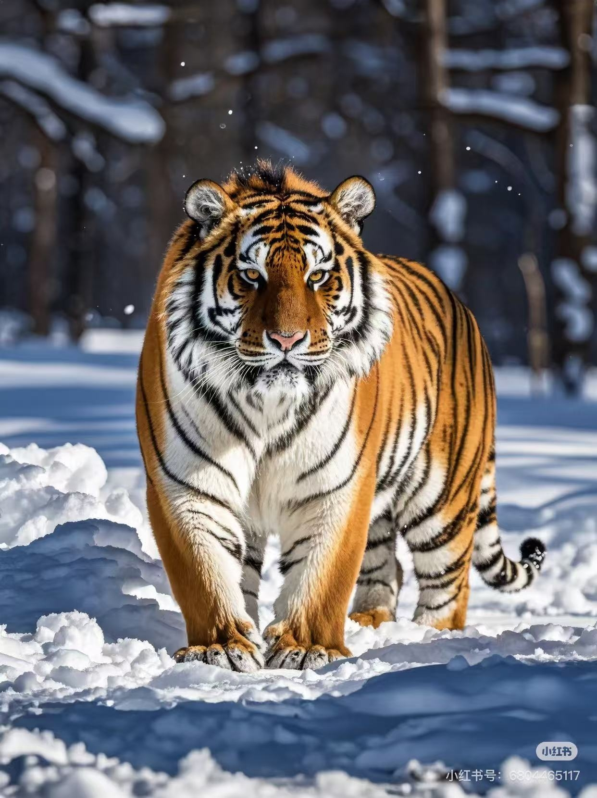
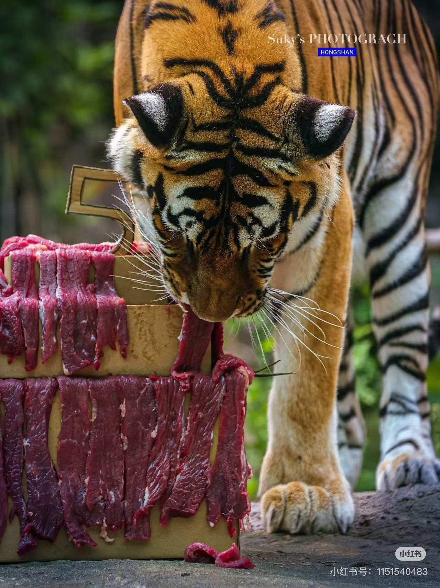
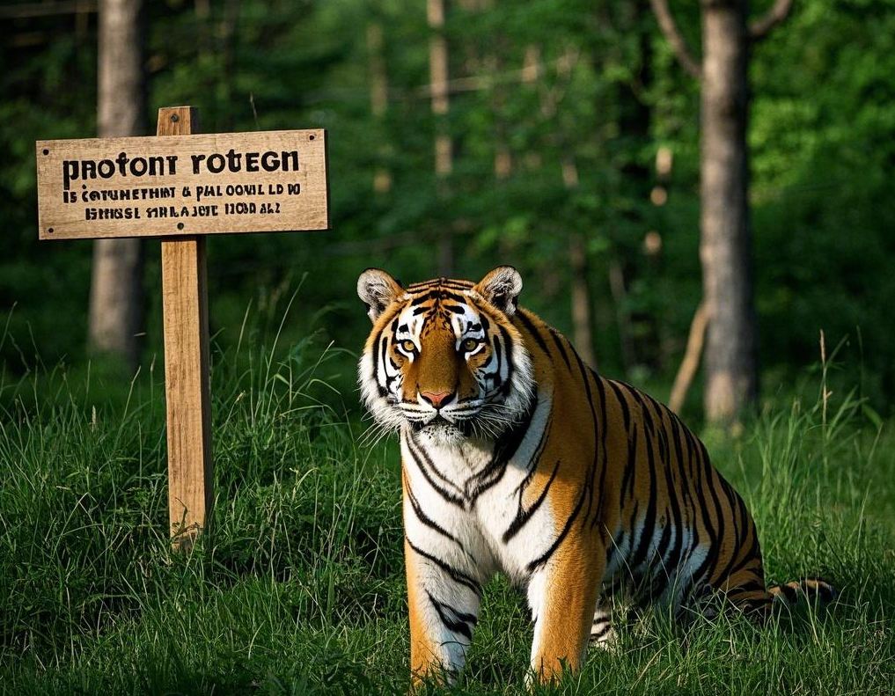

简介
东北虎（学名：Panthera tigris altaica），又称西伯利亚虎，是虎的亚种之一。它是现存体重最大的肉食性猫科动物，成年雄性东北虎体重可达300公斤以上。东北虎拥有独特的条纹皮毛，是自然界中顶级的掠食者。
栖息地
东北虎主要分布在俄罗斯远东地区、中国东北和朝鲜北部的森林中。它们偏好栖息在茂密的针叶林和混交林中，这些地方为它们提供了丰富的猎物和隐蔽的捕猎环境。然而，由于森林砍伐和人类活动的影响，东北虎的栖息地正面临着严重的威胁。
饮食
东北虎是典型的肉食性动物，主要以鹿类、野猪等大中型哺乳动物为食。它们拥有强大的捕猎能力，通常会利用伏击的方式来捕获猎物。为了满足能量需求，一只东北虎每天需要捕食相当数量的猎物。
保护
由于非法捕猎、栖息地丧失等原因，东北虎被列为濒危物种。中俄等国政府以及众多国际组织正在积极采取措施保护东北虎及其栖息地。建立自然保护区、加强执法力度、开展科学研究和人工繁育等工作都在有序进行，旨在恢复东北虎的种群数量。
